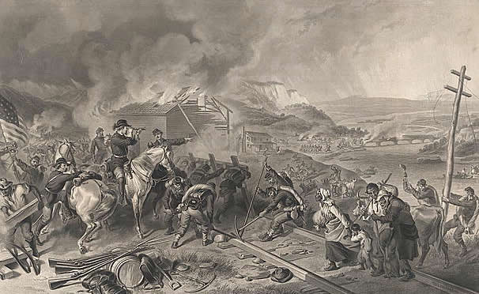
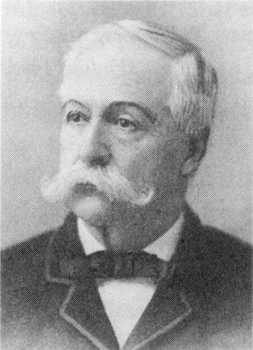
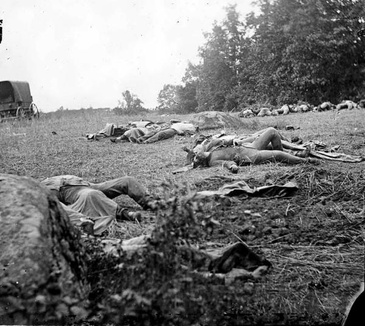
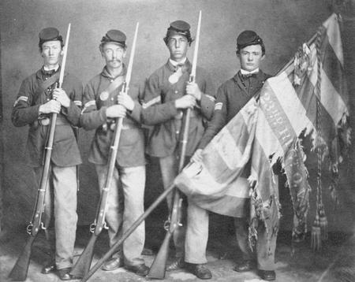

|
No sooner was the war over than those who had seen the face
of battle began to write about the meaning and nature of
courage under fire. Was "courage" merely some animal
instinct that propelled men into danger, or was it the whole
constellation of motivations that led them to place duty
ahead of their personal safety? What did it take to face the
enemy? Why did some soldiers run away while others stayed
and fought, What went through their minds while battle raged
around them and death seemed imminent? Those who had not
"seen the elephant" wanted to know the answers to these and
other questions, and the first generation to write about the
Civil War experience, the soldiers themselves, strove to
tell them. They emphasized the confused nature of battle and
the fact that it allowed very little opportunity for
conscious reflection. In the heat of combat, instincts
seemed to determine a man's behavior, and the origins of
those instincts remained "deep mysteries" even to those in
whom they operated. The real mental and spiritual battles
were fought in anticipation of action rather than in the
heat of combat, and there men had to wrestle with their
fears. For God, country, comrades, family, and their own
honor, the soldiers impelled themselves (or allowed
themselves to be impelled) into chaos and horror and there
coped as best they could. For that devotion, they were
worthy of the thanks and honor of a grateful nation.
Soldiers' Motivations
Some studies of combat motivation have found that the
perceived need of a soldier to prove himself in the eyes of
his comrades is strongest in his first battle or two. After
that the veteran believes he has done enough to demonstrate
his courage, and subsequently his fear of death or a
crippling wound sometimes over-masters his fear of showing
fear. One study finds that same to be true for the Civil
War, in which the seemingly endless carnage by 1863
supposedly eroded the Victorian notions of manhood, courage,
and honor that soldiers had carried into the army.
Soldiers' letters offer some evidence for this
interpretation. Reluctance to fight often characterized
"short-timers" during their final weeks of
enlistment-especially those Union soldiers whose three-year
terms expired in 1864 and who had not reenlisted. "The 2nd
R[hode] I[sland] has got but 4 days more and if they get
into a fight I don't think they will last a minute," wrote a
lieutenant in the 10th Massachusetts, another regiment in
the same brigade, in June 1864. "It makes all the difference
in the world with the men's courage. They do dread awfully
to get hit just as their time is out." A private in the 3rd
New York Cavalry with a good combat record confessed when he
had only three weeks left of his enlistment that "I am what
the Boys call 'playing off,'" by pretending not to have
recovered from an illness. "I have been sent for half a
dozen times but so far have got out of going ... I am in
hopes that it may last until my time is out." This
psychology did not exist in the Confederate army because
there was no such thing as a Confederate short-timer. The
Richmond Congress required men whose enlistments expired to
reenlist or be drafted.
A majority of Union soldiers served through the end of
the war unless killed or badly wounded, however, because
half of the three-year volunteers of 1861 reenlisted and the
terms of the 1862 three-year volunteers did not expire
before Appomattox. Among these men, and among most
|

"Sherman's March" tested the resolve
of both soldiers and civilians.
|
Confederate soldiers, little change in the values of honor
and courage they brought into the war is reflected in their
letters and diaries. "I do most earnestly hope that I may be
enabled to meet my duties like a man when the breath of
battle blows around me," wrote a corporal in the 64th Ohio
in language that sounds like 1861 but was actually written
in 1864 as he returned from his reenlistment furlough.
Although he had fought in such bloody battles as Shiloh,
Perryville, Stones River, Chickamauga, and Missionary Ridge,
he expressed the same sentiments that had animated him three
years earlier: "I do hope I may be brave and true for of all
names most terrible and to be dreaded is coward." Another
reenlisted veteran of many battles, a private in the 2nd
Vermont of the Vermont brigade, which suffered more combat
deaths than any other brigade in the Union army, wrote after
his regiment lost 80 men killed and 254 wounded in the
Wilderness that "I am sure if I had acted just as I felt I
should have gone in the opposite direction [that is, to the
rear] but I wouldn't act the coward ... I clenched my musket
and pushed ahead determined to die if I must, in my place
and like a man,"
These were far from isolated examples. If anything, the
motivating power of soldiers' ideals of manhood and honor
seemed to increase rather than decrease during the last
terrible year of the war. A veteran in the 122nd Ohio wrote
in 1864 that "I would rather go into fifty battles and run
the risk of getting killed than to be ... a coward in time
of battle." The lieutenant colonel commanding the 70th
Indiana in Sherman's Atlanta campaign broke down from stress
in June 1864 after a month of almost continuous fighting,
Although he was still sick and exhausted, he returned to his
regiment after a week in the hospital because "those who
keep up are full of ugly feelings toward those who fall
[behind], intimating in every way possible that it is
cowardice that is the cause ... by being with the rest [I]
can prevent anyone feeling that I lack the pluck to face
what others do." And on the eve of marching through South
Carolina with Sherman in 1865, a veteran corporal in the
102nd Illinois wrote simply, in language he might have used
three years earlier, of "the soldier's person-more valuable
to him than all else in the army, save his honor."
The Nature of Bravery
Observant soldiers concluded that most warriors were a
mixture of good and bad qualities. William A. Ketcham of
Indiana believed that 10 percent of the Northern army were
"errant cowards" who had to be bullied and prodded into
battle. They were adept at finding ways to get out of combat
and always came up with plausible excuses for the absence.
Other commentators placed the proportion of these men as
high as 25 percent. Ketcham believed that another 10 percent
of the Northern army were genuinely courageous, and the
remaining 80 percent fell somewhere in the range between
cowardice and bravery. Some of the latter tended
consistently to one extreme or the other in every
engagement; others waffled in their tendencies from one
battle to the next. These men remained within the safe
margins of acceptability. However, whether they gave
consistently good service to the cause or limited their
contributions, they did not desert, refuse to perform duty,
or stage mutinies. They held on, to a greater or lesser
degree, to the role of the soldier and pulled the Northern
war effort through to victory.
Soldiers often differentiated between moral and physical
courage, believing the former to be inspired by a
recognition of the terror and danger of the battlefield. The
man of moral courage consciously rose above those fears and
performed his duty. The man of physical courage responded
only to the nervous stimulus of combat; his bravery was the
unthinking action of one who foolishly ignored danger and

The "rebel yell" served to augment the courage of Confederates
charging into battle while undermining that of their opponents.
|
indulged in the rush of sensation. Perhaps a major reason
that so many essentially solid and sincere men waffled in
their duties during the war was that they could not
consistently balance their moral and their physical courage.
At times, one force or the other might be weaker or
stronger.
Moral courage was widely recognized as the more reliable
form of bravery, because it was based on reflection and
higher purpose. Physical courage, by nature, could be
fickle. Excitement could lead a man to run away as readily
as it could inspire him to fight. William T Sherman believed
that the soldier who had "true courage" was one who
possessed "all his faculties and sense[d] perfectly when
serious danger is actually present." Thus observers were
convinced that moral courage was "a daily necessity," and
physical courage was needed "only in emergencies."
The lack of physical courage, and of moral courage as
well, was strongly illustrated in the case of a gunner who
served with William A. Moore in the 3rd New York Light
Battery. He had been a professional boxer before the war and
was full of enthusiasm for a fight. In fact, he constantly
bragged about his willingness to take on any man in the
battery. But when he first heard Rebel artillery, "he went
into convulsions through fear." Moore called him "the only
case of constitutional cowardice" he had encountered during
the war, The deflated fighter was assigned as company cook.
In his own way, he aided the Union cause without having to
deal with battle.
Like the unfortunate New York boxer, many soldiers found
that the hardest part of the test was their first battle.
Those men with no previous insight into the psychology of
the soldier simply took what battle had to offer and either
caved in under its pressure or managed to cope. A few, such
as Frank Holsinger of Pennsylvania, sensed enough about the
environment of battle before their first engagement to
debate with their comrades about how they would react to it.
Holsinger argued that if he broke and ran at the first shot,
he could forget about becoming a useful soldier. If he
managed to stand his ground through the initial volleys, he
would know that he had passed the test. Holsinger won this
contest with his nerves.
Many other new soldiers did not fare as well as
Holsinger. The Northern war effort was characterized by
several battlefield reverses involving green troops, many of
whom not only retreated under fire but also lost their sense
of unit cohesion and turned into masses of uncontrolled men
of no use to their commanders. In some cases, these masses
became infected with fear and turned into mobs. The impact
of these events cast a pall over Northern soldiers' sense of
pride and confidence. They had to overcome these setbacks,
which were not only battlefield defeats but severe tests of
civilian morale on the home front as well.
It was hardly surprising that untried soldiers were
particularly vulnerable in their first battle. Taken beyond
their naive conceptions of what combat was like, stripped
bare of smug patriotism and ideals of glory, many of them
reacted to the first shock purely by instinct.
Self-survival, that marvelous natural imperative, often
moved them. They bad no control over their reactions but
acted as if in a trance, conscious of their movements but
not thinking of them. As Captain James Franklin Fitts of the
114th New York put it, a soldier was "a creature of habit
quite as much as of reflection, and what he does in the
moment of danger is often the impulse of instinct."
Instinct led George P. Metcalf of the 136th New York to
perform some rather jumpy exercises while skirmishing on the
wet morning of July 4 [1863] at Gettysburg. His company
received orders to advance. Stiff and chilled from spending
the night in a rain-filled rifle pit, Metcalf crawled out,
stood up, and immediately felt a Rebel bullet whistle by his
head. Without "any second thought I was back in my pit of
water." Metcalf looked about and was relieved to see that
everyone else had done the same. Orders were shouted to try
again. The New Yorkers screwed up their courage and gathered
their nerves, and they all jumped out at the same time,
yelling like demons to steady themselves. Metcalf found
comfort in using his "trusty old frying-pan and knapsack" as
a shield for his face; he somehow convinced himself that
they would "stop any unfriendly bullet." It was illogical
but effective; Metcalf and his comrades advanced as ordered.
A fascinating example of a man unnerved by his first
combat experience and pressed to the hard, unforgiving edge
of courage occurred in the 12th Connecticut Infantry in a
small fight on October 27,1862. Captain John William
DeForest noticed that while advancing across an open field
under fire, the bearer of the state flag suddenly turned
around and began moving to the rear. "I never saw anything
done more naturally and promptly. He did not look wild with
fright; he simply looked alarmed and resolved to get out of
danger." DeForest would later realize that this man was not
a coward, but in this battle he was "confounded by the peril
of the moment and thought of nothing but getting away from
it." DeForest set the man straight by rushing to his side,
drawing his sword, and threatening to crack his skull open.
Still, the conscientious captain had to grab the
color-bearer and physically turn him around before the man
obeyed "in silence, with a curious dazed expression." Each
|

John William DeForest
|
time the Rebels loosed a volley of fire at the regiment, the
colorbearer "fell back a pace with a nervous start; but each
nine I howled 'forward!' in his ear and sent him on again."
This man, whom DeForest refused to identify in his memoirs,
went on to become a reliable soldier in subsequent
engagements.
But there were men who did not fare so well under the
pressure. Their instinctual reactions led them to act in
ways that neutralized their effectiveness on the
battlefield. Nerves and reflexive action led them to "pop
off their pieces [guns] long before there [was] any thing to
aim at," particularly if the regiment was facing combat for
the first time. This reaction would have an effect on
others, and pretty soon half the regiment was wasting
"ammunition, courage and morale." In addition to firing at
unseen targets, soldiers sometimes became too nervous or
excited to load properly. "They drop their cartridges,"
observed the surgeon of the 2nd Maryland Infantry. "They
load and forget to cap their pieces and get half a dozen
rounds into their muskets thinking they have fired them off.
Most of them just load and fire without any consciousness of
shooting at anything in particular." John Schofield, who
served on General Nathaniel Lyon's staff at the battle of
Wilson's Creek, saw a blatant example of this tendency at
the height of that bitter, terrible engagement. He found a
man who was "too brave to think of running away, and yet too
much frightened to be able to fight." All the soldier could
do was fire his musket as rapidly as possible into the air,
doing no harm to the Rebels. Schofield grabbed his arm,
shook him, and told him what he was doing. The man "seemed
as if aroused from a trance, entirely unconscious of what
had happened."
Reflexive action could bring the soldiers to rather odd
and unpredictable actions on the battlefield. At Gettysburg,
Theodore Dodge of the 119th New York Infantry saw a young
man who, although shot in the leg, "sat there loading and
firing with as much regularity and coolness as if untouched,
now and then shouting to some comrade in front of him to
make room for his shot; while some scared booby, with a
scratch scarce deep enough to draw the blood, would run
bellowing out of range." Even a stalwart officer like John
William DeForest temporarily lost control of himself when,
during the May 17 assault at Port Hudson, he saw a sergeant
faint while helping a wounded man to the rear. DeForest
began to faint too but managed to catch himself by taking
deep breaths. He thus avoided "such a ridiculous and
contemptible experience as swooning on the battlefield."
Fainting and wildly firing a musket into the air were
breakdowns of self-control, but they were the result of
physiological rather than moral failings. Soldiers could not
always control their reactions to the shock of battle. A
regiment could be thrown into confusion if the first enemy
volley took deadly effect in the ranks; conversely, the men
could be buoyed up to steadiness if that first volley sailed
harmlessly over their heads. Soldiers often responded to
battle without thought. The connection between the sounds of
combat and the reactions of soldiers was reduced to its
essence for David Hunter Strother, a staff officer at the
first battle of Winchester. As the Federal column moved
along, Rebel artillery projectiles whistled as they passed
overhead. "At every report, the living mass started and
quick,--ned its motion as if shocked by electricity."
Of course, this innate reaction could work to the benefit
of whichever army took the tactical defensive. Soldiers
needed more nerve to attack a position than to defend one,
and if the terrain or man-made obstacles offered them a
convenient opportunity to break their forward motion and
|

Amongst all the injuries and death
inflicted during battle, it could be difficult for soldiers
to keep a level head.
|
take cover, they usually did so. The 13th Indiana Infantry,
for example, launched an attack on Rebel earthworks only to
find a gully that ran roughly parallel to the Confederate
trench. The men instinctively dove into it for cover. "They
knew that in [the] economy of God's provi[de]nce that ditch
was put right there for the protection and preservation of
the 13th Indiana."
The impulse to dive behind some convenient cover was
prompted by nervous reactions to battle; the instinct of
self-preservation took over, and nothing the line officers
did or said could counter it. As one Federal veteran put it
after the war, a "hidden hole" offered the nervous soldier a
good solution to the conflict between "the physical fear of
going forward and the moral fear of turning back." There was
no stigma attached to this tendency; it occurred many times
on many battlefields and was widely recognized by both
officers and privates, and no one was prepared to criticize
the men for this natural act.
The soldier's nervous reaction to battle often continued
after the engagement ended. Staff officer Horace Porter
found it "curious" that for some time after a battle the men
"would start at the slightest sound, and dodge at the flight
of a bird or a pebble tossed at them." Less nervous soldiers
found great fun in deliberately throwing small objects past
the heads of these men to make them wince.
That some men could jest about other soldiers' reflexive
response to combat is another indication that individuals
went through the process of responding to battle
differently. Some adapted at a more accelerated pace than
others. They defined themselves as soldiers more rapidly and
learned the limits of bravery more easily.
Experience became the best teacher of soldiers. After
learning how reflexes and instincts could influence their
reactions to battle, they calmed down into a pragmatic
acceptance of their new lives as soldiers. One of the most
important lessons they learned was that all men had limits.
They were not expected to be foolishly brave Linder fire or
to throw their lives away in hopeless attacks. Running away
from the battlefield might be acceptable if it was done
without panic and was immediately followed by reorganizing
the battle line and continuing to fight. If William Ketcham
was right, 80 percent of the Union army needed to exercise
some degree of judgment about whether they could withstand a
particular moment in battle. As long as they had a safety
valve, an opportunity to temporarily take themselves out of
an unbearable situation, they could return quickly to their
duty without endangering the war effort or their images as
good soldiers.
The Unraveling of the Soldiers' Courage
[Over time], as Civil War battles revealed by degrees
that bravery was no guarantor of victory, that rifled
muskets and defensive works could thwart the most spirited
charge, soldiers sensed the insufficiency of courage and
began to move away from many of their initial convictions.
One of the first tenets to be discarded was the one
holding that exceptional combat courage deserved special
protection, even to the point of suspending efforts to kill
the bravest of the enemy. Indeed, certain commanders had
opposed such deference almost from the outset. Stonewall
Jackson always, urged special attention of another sort to
the enemy's most courageous soldiers: "... Shoot the brave
officers and the cowards will run away and take the men with
them. Jackson focused on the way courage bonded enemies, and
he wanted no part of anything that might vitiate the
combativeness of his troops. He also comprehended, as few
did so early in the war, that to obliterate the most
courageous of the foe was to demoralize those whose
discipline drew on their example.
Other officers, within Jackson's relentless certainty in
the matter, moved in his direction as the war went on ...
That logic soon made targets of the enemy's color-bearers,
soldiers whose courage had won them positions of honor as
|

Serving as flag bearer was dangerous duty,
particularly in the latter years of the war, as this picture
of soldiers from the 23rd Ohio Infantry attests.
|
carriers of the regimental standards around which men might
be inspired to charge or to rally. By the time of
Fredericksburg, a Confederate officer was ordering his men,
"Now, shoot down the colors," and by 1865 it had become
acceptable practice to direct fire upon color-bearers even
as they lay on the ground ... Often every member of the
color guard, ordinarily one corporal from each of the
regiment's ten companies, was shot down before the battle
was over. Early in the war soldiers had coveted such
positions. By 1863, though by then additional incentives
were offered--in the 20th New York, exemption from guard and
picket, company drills and roll call; duty of no more than
three hours a day--few any longer volunteered. In such
brusque ways, soldiers discovered that a war of attrition
left less room for concessions to the enemy's courage.
A related casualty was the conviction that courageous
behavior imparted battlefield protection. Experience taught
the opposite. The cowards either remained at home or found
ways to avoid battle; the bravest "went farthest and stand
longest under fire"; the best died. In January 1863 General
Frank Paxton of the Stonewall Brigade complained: "Out of
the fifteen field officers elected last spring five have
been killed and six wounded ... In these losses are many
whom we were always accustomed to regard as our best men."
Three months later he again found it "sad, indeed, to think
how many good men we have lost. Those upon whom we all
looked as distinguished for purity of character as men, and
for gallantry as soldiers, seem to have been the first
victims." After thirty days of Wilderness combat, Colonel
Theodore Lyman of Meade's staff deplored Grant's strategy:
"[T]here has been too much assaulting, this campaign! ...
The best officers and men are liable, by their greater
gallantry, to be first disabled."
Those in the ranks noted the phenomenon principally by
its result: A decline in the quality of their leadership.
John Haskell, an artillery commander in Lee's army, was
bitter that those who took such care to protect their own
lives, "the dodgers," by virtue of their seniority had been
promoted to replace dead or disabled officers who had "taken
no pains" to preserve their lives. By such routes soldiers
moved far from their original conception of ostentatious
courage as protection and assurance of victory to the
realization that it was instead an invitation to death. A
few might attempt to find a new virtue in that
reality--Charles Russell, contemplating the death in battle
of Robert Gould Shaw, decided that the best colonel of the
best black regiment had to die, for "it was a sacrifice we
owed"--but most simply felt its demoralization.
As convictions about the potency and protectiveness of
courage yielded to the suspicion that special courage had
become the mark of death, another of the war's original
precepts--that the courageous death was the good death; that
it had about it some nobler quality reflected, for example,
in the smiles of courageous dead and withheld from frowning
cowardly dead--also failed the test of observation. As Frank
Wilkeson's experiences in the Army of the Potomac taught
him, "Almost every death on the battle-field is different."
He knew a soldier who had died quickly and whose face had
only then become "horribly distorted," suggesting to
passersby a long agony that he had never experienced. The
countenances of other dead had been "wreathed in smiles,"
allowing survivors to assure themselves that their comrades
had died happy, but "I do not believe that the face of a
dead soldier, lying on a battle-field, ever truthfully
indicates the mental or physical anguish, or peacefulness of
mind, which he suffered or enjoyed before his death ... It
goes for nothing. One death was as painless as the other."
Despondency sprang from that phrase "It goes for nothing,"
for the experience of war was teaching him, and so many
others, that the rewards of courage were far less
significant and the cost far higher than they had imagined
and that the individual's powers of control were far feebler
than they had supposed.
Doubt that the original equations were still valid
sometimes arose in mundane fashion. A Massachusetts soldier
noticed that those who persevered to complete arduous
marches with the column were often "rewarded" by being
placed on guard duty before the stragglers reached camp.
[Charles Minor] Blackford, who like other Confederate
cavalrymen was required to furnish his own mount, realized
that if one were forthrightly courageous in battle, one's
horse was more likely to be killed. From month to month
replacements became more and more difficult and expensive to
procure, and failure to find one resulted in reassignment to
the infantry, "Such a penalty for gallantry was terribly
demoralizing."
Though disconcerting, such challenges to the notion that
courage permitted the soldier to control his life and death
were pinpricks set beside the challenges presented by the
failed charge. The rapidity with which great numbers of men
were killed at Antietam and the ease with which they were
cut down at Fredericksburg and Gettysburg produced gloomy
reflection as soldiers contemplated a war that had
inexplicably recast its actors as victims. Minds groped to
comprehend why courage had failed to secure victory and in
the face of such disastrous results began, hesitantly and
diversely, to move away from conventional thought and
language.
Lieutenant William Wood of the 19th Virginia was one of
the 15,000 who made Pickett's charge. Prior to the attack he
and his men were ordered to lie down, exposed both to a
broiling sun and to the fire of Federal artillery batteries.

Pickett's Charge is, arguably, the single most famous
event of the Civil War.
|
(A Napoleon cannon could hurl a 12-pound ball a mile.) When
they were brought to attention to begin the attack, some of
the men immediately dropped of "seeming sunstroke," but for
the charge itself Wood had only praise. It was a "splendid
array" and a "beautiful line of battle." But it failed:
"Down! Down! Go the boys." As, he reached that spot of
ground beyond which no Confederate could go, he suffered a
sense of personal shame: "Stopping at the fence, I looked to
the right and left and felt we were disgraced." The
assault's failure bluntly told him that he and his comrades
had not done enough, and yet he knew that they had done
everything they had earlier been sure would carry the
victory. The result was a paralyzing disbelief. "With one
single exception I witnessed no cowardice, and yet we had
not a skirmish line [still standing]." Courage should have
conquered!
John Dooley also charged that day, with the 1st Virginia,
but his reactions carried him beyond Wood. Those around him
who survived the Union shelling, feeling the special
impotence that comes to infantry who have no way to respond
to a harrowing fire, were "frightened out of our wits." And
then the charge: To Dooley it became simply that which
opened the "work of death." "Volley after volley of crashing
musket balls sweep through the line and mow us down like
wheat before the scythe." Only thirty-five of his regiment's
155 men escaped bullets and shells, and Dooley, with his
shattered thighs, was not one of them. "I tell you, there is
no romance in making one of these charges," he concluded;
"the enthusiasm of ardent breasts in many cases ain't
there." He realized that the spirit of heroism no longer
possessed the men; he mildly regretted its departure, but he
had lost confidence that its presence would have reversed
the outcome. He had not yet developed any clear vision of
why failure came to such charges, but what emerged was a
sense of his loss of control. His thoughts had turned from
his performance to his survival: "Oh, if I could just come
out of this charge safely how thankful would I be!" By such
rough stages did soldier thought evolve.
Forced to absorb the shocks of battle, to remodel combat
behavior, to abandon many of the war's initial tenets, to
bear discipline of an order intolerable not long before, to
rationalize a warfare of destruction, and to come to terms
with changes in their relationships with commanders,
conscripts, and civilians, soldiers suffered a
disillusionment more profound than historians have
acknowledged--or the soldiers themselves would concede
twenty-five years later. The intensification of ties with
comrades and the maintenance of respect for enemy combatants
were ultimately defensive reactions by soldiers who were
alarmed that the war's experience was isolating them from
those beyond battle and were turning for support to those
who knew battle as they did. Neither, however, could offset
the effects of their separation from the foundations of
their prewar lives.
Source: Steven C. Woodworth, ed., The Loyal, True, and Brave
(Wilmington, DE: Scholarly Resources, Inc., 2002), 66-81.
|